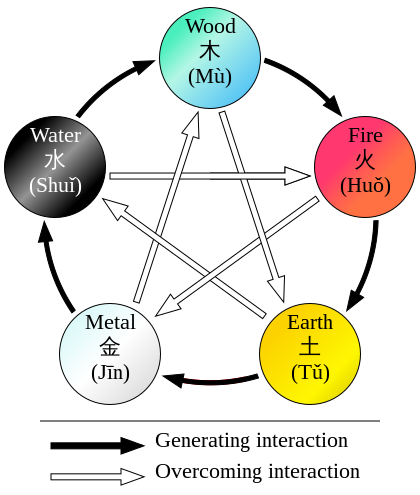

Qi and cultivation
Qi and cultivation are fundamental concepts in the realm of martial arts and spiritual practices. Qi, often referred to as life force or vital energy, is the essence that flows through all living beings and the world around them. It is the source of power and vitality that cultivators seek to harness and refine through various techniques and training. Cultivation, on the other hand, is the process of developing and strengthening one's qi, honing martial skills, and advancing on the path of enlightenment. Through dedicated practice and discipline, cultivators strive to harmonize their qi, purify their body and mind, and achieve a deeper connection with the natural forces and elements.
Yin and Yang
Yin and yang, the complementary forces of nature, have a profound impact on cultivation practices. Yin embodies the qualities of darkness, stillness, and introspection, while yang represents light, activity, and assertiveness. In the realm of cultivation, yin can be associated with the aspects of death and decay, symbolizing the transformative nature of endings and the return to the earth. On the other hand, yang embodies the essence of life, vitality, and growth.
Focusing solely on yin cultivation allows practitioners to delve into the depths of introspection, cultivating a profound understanding of the self and the spiritual realm. This path grants them insights into the mysteries of existence and facilitates the exploration of inner strength and resilience. Yin cultivators may possess heightened sensitivity, intuition, and the ability to tap into unseen energies. However, they may face challenges when it comes to direct confrontation or taking assertive action, as their emphasis on stillness and passivity can limit their ability to navigate dynamic situations.
In contrast, those who prioritize yang cultivation embrace the vibrant energy of life and action. They develop physical prowess, honing their martial skills and harnessing external forces to manifest their will. Yang cultivators excel in combat, demonstrating boldness, courage, and the ability to seize opportunities. However, an overemphasis on yang may lead to a lack of introspection and inner harmony, making them prone to impulsivity and a reliance on brute force.
Harmonizing yin and yang energies in cultivation offers a more balanced and holistic approach. By integrating the qualities of both forces, practitioners gain a comprehensive understanding of the world and themselves. They possess the ability to adapt to different circumstances, blending the tranquility and wisdom of yin with the vigor and assertiveness of yang. However, it is important to note that this harmonization comes at a cost. While cultivators who focus solely on yin or yang may attain exceptional mastery in their chosen path, those who seek balance and harmonization will inevitably sacrifice some of the singular power and specialized abilities that come with exclusive focus.
Ultimately, the choice between emphasizing yin, yang, or pursuing their harmonization rests with the cultivator's personal preferences, goals, and nature. Each path offers unique strengths and weaknesses, and the journey of cultivation becomes a personal exploration of balance, self-discovery, and the intricate dance between life and death, growth and decay.
The Elements

There are five elements, Fire, Earth, Metal, Water and Wood. These elements are not something cultivators consciously align themselves with but rather they are innate affinities they are born with. Cultivators possess a natural resonance with one or more of these elements, which shapes their path of cultivation. However, it is crucial to understand that the more elements a cultivator is in tune with, the more they must navigate the delicate balance between them.
In this intricate dance of elements, their interactions reflect the dynamic relationships found in nature. Each element has the potential to strengthen, absorb, or even destroy another. For example, water has the power to extinguish fire, while fire can melt metal. These interactions signify the inherent vulnerabilities and limitations present in cultivation.
Cultivators who are attuned to multiple elements must carefully manage the interplay between them. While this broad affinity grants them versatility and a broader range of techniques, it also imposes a limit on their individual mastery. Their cultivation potential becomes more constrained as they must distribute their focus and energy across multiple elements. In contrast, cultivators who specialize in a single element can channel their efforts into a more concentrated pursuit, delving deeper into the nuances and unlocking greater mastery within that specific domain.